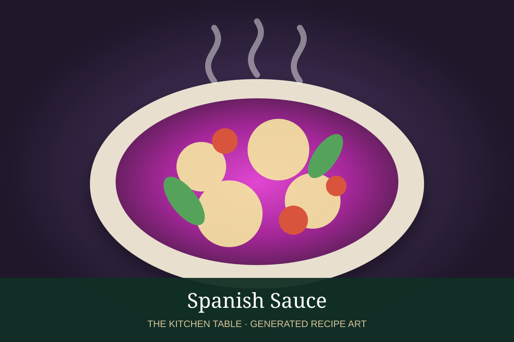

← Sauce Tomate & related sauces
SAUCE · TOMATO SAUCE FAMILY
Spanish Sauce
A tomato sauce with onions, peppers, garlic, paprika, and a warm Spanish-style aromatic profile.
40 minMakes about 3 cups

Photo: NEWS.ru
Ingredients
- 2 tbsp olive oil
- 1 onion, diced
- 1 red bell pepper, diced
- 3 garlic cloves, minced
- 1 tsp smoked paprika
- 1 can (28 oz) crushed tomatoes
- 1/2 cup stock
- 1 bay leaf
- Salt and black pepper
Preparation
- Cook onion and bell pepper in olive oil until soft.
- Add garlic and smoked paprika and cook 30 seconds.
- Add tomatoes, stock, and bay leaf.
- Simmer gently for 25 to 30 minutes.
- Remove bay leaf and season to taste.
Family: See the Sauce Tomate page →